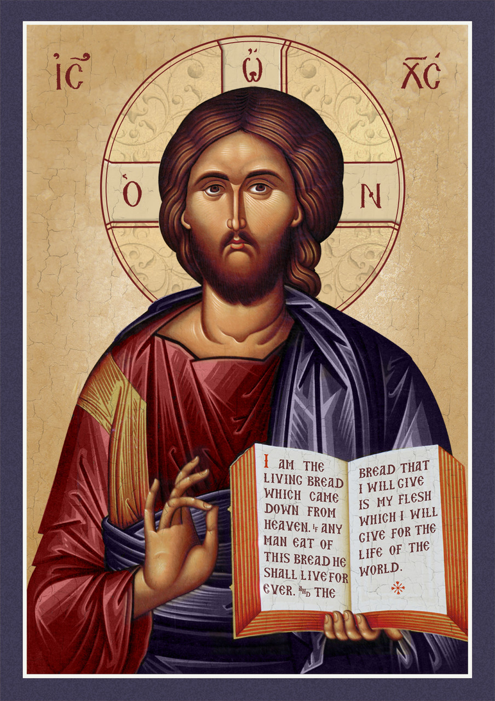

"Lord, teach us to pray, as John also taught his disciples." — Luke 11:1 (NRSV)
Our Father, who art in heaven,
hallowed be Thy name.
Thy kingdom come,
Thy will be done,
on earth as it is in heaven.
Give us this day our daily bread,
and forgive us our trespasses,
as we forgive those who trespass against us,
and lead us not into temptation,
but deliver us from evil.
Amen.
Pater noster, qui es in caelis,
sanctificetur nomen tuum.
Adveniat regnum tuum.
Fiat voluntas tua,
sicut in caelo, et in terra.
Panem nostrum quotidianum da nobis hodie,
et dimitte nobis debita nostra,
sicut et nos dimittimus debitoribus nostris.
Et ne nos inducas in tentationem,
sed libera nos a malo.
Amen.
Pater hēmōn, ho en tois ouranois,
hagiasthētō to onoma sou.
Elthetō hē basileia sou.
Genēthētō to thelēma sou,
hōs en ouranō, kai epi tēs gēs.
Ton arton hēmōn ton epiousion dos hēmin sēmeron.
Kai aphes hēmin ta opheilēmata hēmōn,
hōs kai hēmeis aphiemen tois opheiletais hēmōn.
Kai mē eisenegkēs hēmas eis peirasmon,
alla rhysai hēmas apo tou ponērou.
Amēn.
The petition for "daily bread" connects to a deep biblical theme that runs from the manna in the wilderness to Christ's revelation of Himself as the true Bread of Life.
Creator of all things, true source of light and wisdom, origin of all being, graciously let a ray of your light penetrate the darkness of my understanding.
Take from me the double darkness in which I have been born, an obscurity of sin and ignorance.
Give me a keen understanding, a retentive memory, and the ability to grasp things correctly and fundamentally.
Grant me the talent of being exact in my explanations and the ability to express myself with thoroughness and charm.
Point out the beginning, direct the progress, and help in the completion.
I ask this through Jesus Christ our Lord. Amen.
Come, Holy Spirit, fill the hearts of your faithful and kindle in them the fire of your love.
Send forth your Spirit and they shall be created, and you shall renew the face of the earth.
O God, who taught the hearts of the faithful by the light of the Holy Spirit, grant that by the gift of the same Spirit we may be truly wise and ever rejoice in His consolation. Through Christ our Lord. Amen.
Lord Jesus, we thank you for the gift of your Word, which is a lamp unto our feet and a light unto our path.
Open our minds to understand the Scriptures and our hearts to live them.
Help us, like the disciples on the road to Emmaus, to recognize you in the breaking of the bread.
May the seeds planted today bear fruit in our lives, to the glory of God the Father, Son, and Holy Spirit. Amen.
Glory be to the Father, and to the Son, and to the Holy Spirit.
As it was in the beginning, is now, and ever shall be, world without end. Amen.
The word translated "daily" in "give us this day our daily bread" renders the Greek word epiousios (ἐπιούσιος), found in Matthew 6:11 and Luke 11:3. This word is exceedingly rare — so rare, in fact, that apart from these two parallel petitions of the Lord's Prayer, it is not attested anywhere else in surviving Greek literature, whether biblical, classical, or in the papyri. The early Fathers and translators were therefore left to determine its meaning largely from its component parts and from theological reflection.
Epiousios appears to be formed from the preposition epi (upon, for, towards) and either ousia (substance, being) or ho epiōn (the coming, the following). This ambiguity gave rise to two major lines of interpretation:
1. "Daily" / "for the coming day" — taking the root as related to epiōn ("the following day"), giving the sense of bread sufficient for today or for the day to come, echoing the daily gathering of manna in Exodus 16, where Israel was to trust God for each day's portion without storing up surplus.
2. "Supersubstantial" (Latin: supersubstantialem) — taking the root as related to ousia ("substance" or "being"), giving the sense of bread that is "above" or "beyond" ordinary substance — that is, a bread of a higher, supernatural order.
St. Jerome, in translating the Greek New Testament into Latin for the Vulgate, was confronted with this same difficulty and rendered the word two different ways in the two Gospels:
In Matthew 6:11, the Vulgate reads: "panem nostrum supersubstantialem da nobis hodie" — "give us this day our supersubstantial bread."
In Luke 11:3, the Vulgate reads: "panem nostrum quotidianum da nobis" — "give us our daily bread," using the more ordinary Latin word quotidianum.
This double rendering reflects Jerome's recognition that epiousios carries a depth of meaning that no single Latin (or English) word can fully capture. The liturgical Pater Noster, recited at every Mass, follows the Lucan form, quotidianum, for its familiarity — yet the Matthean alternative, supersubstantialem, preserves a theological richness worth recovering.
The Catechism of the Catholic Church (CCC 2837) draws on both senses together. Taken in its most literal sense, epiousios ("daily") signifies what is necessary for life and points to the trust of the poor in God's providence, as with the manna of Exodus 16, which could not be hoarded and had to be received fresh each day.
Taken in its qualitative sense, epiousios ("supersubstantial") points directly to the Bread of Life, the Body of Christ, "the medicine of immortality, without which we have no life within us." On this reading, the petition is not merely for bread to sustain the body for one day, but for the Eucharist — the Bread that is "above all substances," given to us under sacramental signs, which Jesus identifies with Himself in John 6:51: "I am the living bread that came down from heaven."
In this light, the petition "give us this day our daily bread" becomes inseparable from the themes already considered: the manna that prefigured it, and the Bread of Life that fulfills it. To pray the Our Father is, in some sense, already to ask for Christ Himself — our daily and our supersubstantial Bread.
1. What does it mean to call God "Our Father" rather than "my Father"? How does this shape our understanding of community and the Church?
2. How does the manna in the wilderness prepare God's people to understand Jesus' words "I am the bread of life"?
3. In what ways do we ask for "daily bread" — both physical and spiritual — in our own lives?
4. How does the petition "forgive us our trespasses as we forgive those who trespass against us" challenge us personally?
5. What practical steps can we take to avoid temptation and rely on God's deliverance from evil?
6. Knowing that "daily bread" may also be translated "supersubstantial bread," how does this change how you understand and pray this petition? How might it deepen your appreciation of the Eucharist as the true "Bread of Life"?